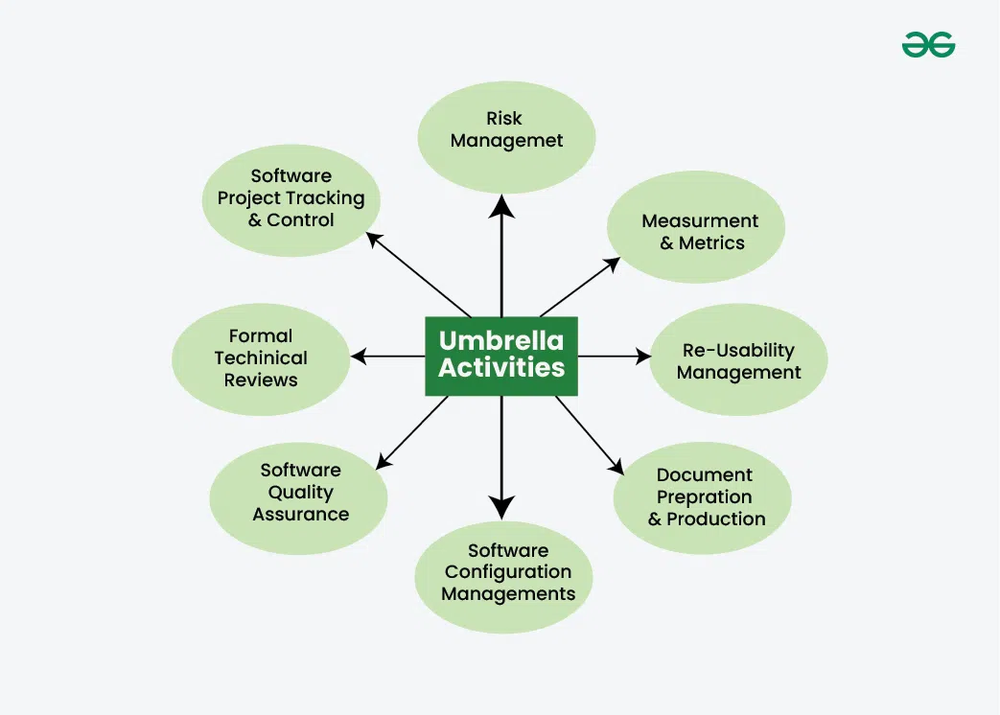

9.1 Processes & Configuration Management (overview)
Processes and Configuration Management address how a software organisation controls change across the entire development lifecycle. A process is a defined set of repeatable activities — from requirements to maintenance — that produce consistent results. Configuration management is the discipline that identifies, controls, and tracks every changeable work product so that the team always knows what is being built, tested, and delivered.
Together, formal processes and configuration management prevent chaos in multi-person, multi-version, geographically distributed projects. SCM is classified as an umbrella activity that runs parallel to every SDLC phase, alongside SQA, risk management, and technical reviews — see §8.2 SQA.

Why configuration management matters
- Modern software projects involve multiple people working on code that is continually updated — without control, integration becomes impossible.
- Projects often have multiple versions, branches, and authors working concurrently, sometimes from different geographic locations.
- Changing requirements, policies, budgets, and schedules must be accommodated without breaking the existing product.
- Software must run on various machines and operating systems, requiring controlled builds and reproducible configurations.
- SCM helps develop coordination among stakeholders and controls the costs involved in making changes to a system.
- Without an SCM plan, a project can become uncontrollable and may be discontinued — especially in outsourced or distributed teams.
Problems without configuration management
- Inconsistency from replication: Engineers keep private copies of modules and forget to notify others of interface changes, causing integration failures at build time.
- Concurrent access conflicts: Two developers edit the same file simultaneously and overwrite each other's work without knowing.
- Unstable development environment: A module keeps changing while other modules integrate against it — baselines freeze a known-good state to prevent this.
- No status accounting: The team loses track of who changed what, when, and why — making debugging and auditing nearly impossible.
- Handling variants: A bug fix in one version must be applied consistently across all active releases and branches — without SCM this is error-prone.
SCM within Software Project Management
- SCM is one of the management types within SPM — alongside requirement management, change management, and release management — see §3.2 Project Management Process.
- SCM is the process of controlling and tracking software changes, including revision control and establishment of baselines.
- Change control boards (CCB) and traceability links connect SCM to requirements management in §4.7 Review & Management.
- At CMM Level 2, Software Configuration Management is a key process area — see §3.10 CMM.
- SQA plans reference version control, baselines, and change control as quality mechanisms — see §8.4 SQA Plans.
Topic 9 structure
- §9.2 defines Software Configuration Management and its core concepts (CIs, baselines).
- §9.3 lists the objectives SCM is designed to achieve.
- §9.4 describes the main SCM activities performed throughout a project.
- §9.5 explains the formal change control process and roles involved.
- §9.6 covers software version control procedures and tools.
- §9.7 presents system-level configuration management as an integrated discipline.
Q: What is configuration management? Why is it needed in software projects? What problems arise without SCM?
Model answer points:
- Process + configuration management = controlled, repeatable development with tracked product state.
- SCM = umbrella activity parallel to entire SDLC; part of SPM.
- Needed for: multi-person projects, concurrent versions/branches, changing requirements, multi-platform deployment, cost control.
- Without SCM: inconsistency, concurrent-access conflicts, unstable environment, no status accounting, variant chaos.
- Links to SQA, CMM Level 2, requirements change control, SQA plans.